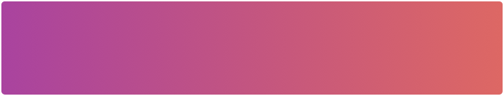
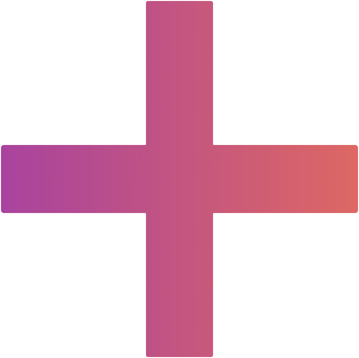

<ion-header>
    <ion-toolbar color="primary">
        <ion-buttons slot="start">
            <ion-back-button text=""></ion-back-button>
        </ion-buttons>
        <ion-title>hizmet ekleyin</ion-title>
    </ion-toolbar>
    <ion-toolbar class="searchtoolbar">
        <ion-searchbar (ionChange)="onInput($event)" (ionClear)="onCancel()" placeholder="hizmet arayın" class="searchbar full-width-padding"></ion-searchbar>
        <ion-slides *ngIf="storeMenu" style="opacity: 1">
            <div *ngFor="let item of selectedCategoryOptions; let i = index; ">
                <ion-slide>
                    <ion-button [class.active-category]="activeCategory == item" fill="clear" (click)="selectCategory(item)">
                        <div class="cat-container">
                            
                            <div class="text-size8 white-color" [innerHTML]="itemCategoryName[item] | kategoriIsmi:itemCategoryName[item]" [ngClass]="{'disable-opacity': item != activeCategory }">
                            </div>
                        </div>
                    </ion-button>
                </ion-slide>
            </div>
            <ion-button *ngIf="seciliUrunler.length>0" [class.active-category]="activeCategory == 0" fill="clear" (click)="selectCategory(0)">
                <div class="cat-container">
                    
                    <div class="text-size8 white-color" [ngClass]="{'disable-opacity': activeCategory != 0 }"> seçilenler
                    </div>
                </div>
            </ion-button>
        </ion-slides>
    </ion-toolbar>
</ion-header>


<ion-content color="medium" [fullscreen]=false style="height: 88%" scrollEvents=true (ionScroll)="onScroll()">

    <!-- SEÇİLİ ÜRÜNLER LOOP-->
    <ion-list-header *ngIf="seciliUrunler.length>0">
        <ion-label class="text-size8 black-text cat-name-header">
            seçilenler
        </ion-label>
    </ion-list-header>

    <div *ngFor="let item of seciliUrunler; let i = index;">
        <ion-list color="medium" class="full-width-margin border-radius" [class.ozel-istek-margin]="i == 1110">
            <div class="full-width-margin ">
                <ion-item button detail="false" lines="none" class="store-menu-item item-padding ">
                    <div class="item-container">
                        <div style="display: flex;">
                            
                            <ion-label class="text-size8 text-color name-label lowercase">
                                {{ item.cins_adi }}
                            </ion-label>
                        </div>
                        <div style="display: flex">
                            <ion-button fill="clear" shape="round" class="plus-minus-btn" (click)="adetEksi(item)">
                                
                            </ion-button>
                            <ion-label class="amount-text text-color text-size8">{{ item.adet }} Adet</ion-label>
                            <ion-button fill="clear" shape="round" class="plus-minus-btn" (click)="urunSecim(item)">
                                
                            </ion-button>
                        </div>
                    </div>
                </ion-item>
            </div>
        </ion-list>
    </div>

    <!-- BÜTÜN ÜRÜNLER-->
    <div *ngFor="let item of storeMenu; let i = index;">
        <ion-list-header *ngIf="!storeMenu[i-1] || storeMenu[i-1].kategori_id != item.kategori_id">
            <ion-label *ngIf="item.kategori_id!=0" class="text-size8 black-text cat-name-header">
                {{itemCategoryName[item.kategori_id]}}
            </ion-label>
        </ion-list-header>
        <ion-list color="medium" class="full-width-margin border-radius" [class.ozel-istek-margin]="i == 1110">
            <div class="full-width-margin ">
                <ion-item button detail="false" lines="none" class="store-menu-item item-padding ">
                    <div class="item-container">
                        <div style="display: flex;">
                            
                            <ion-label class="text-size8 text-color name-label lowercase">
                                {{ item.cins_adi }}
                            </ion-label>
                        </div>
                        <ion-button fill="clear" (click)="urunSecim(item)" *ngIf="seciliUrunler.indexOf(item) < 0 else adetAyar">
                            <ion-label class="text-size8 text-color add-btn">
                                ekle
                            </ion-label>
                        </ion-button>

                        <ng-template #adetAyar>
                            <div style="display: flex">
                                <ion-button fill="clear" shape="round" class="plus-minus-btn" (click)="adetEksi(item)">
                                    
                                </ion-button>
                                <ion-label class="amount-text text-color text-size8">{{ item.adet }} Adet</ion-label>
                                <ion-button fill="clear" shape="round" class="plus-minus-btn" (click)="urunSecim(item)">
                                    
                                </ion-button>
                            </div>
                        </ng-template>
                    </div>
                </ion-item>
            </div>
        </ion-list>
        <!-- <ion-item *ngIf="i==1" color="tertiary" button detail="false" lines="none" class="ozel-istek">
            <ion-label class="text-size6 ozel-istek-label">
                özel istek ekle
            </ion-label>
        </ion-item> -->
    </div>
</ion-content>

<div slot="fixed" class="bottom-btn-padding">
    <ion-button expand="block" class="ion-button-block" (click)="navigateToMagazaSecim()">uygun mağazaları göster</ion-button>
</div>